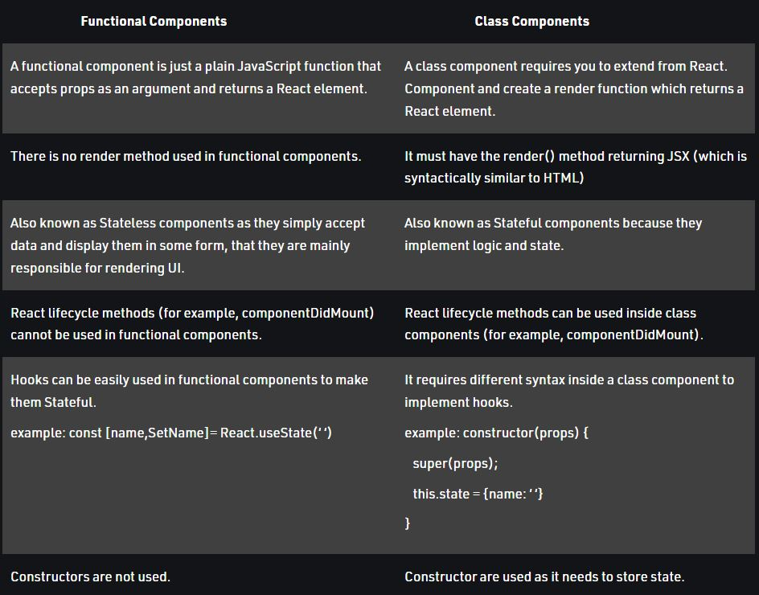

What is React? What are its features.
React is an open-source JavaScript library that is used for building user interfaces specifically for single-page applications.
React allows developers to create large web applications that can change data, without reloading the page.
It's used for handling the view layer for web and mobile apps.
Its features:-
Virtual DOM- This characteristic of React helps to speed up the app development process and offers flexibility.
Single Page Application.
Component structure.
JSX- Writing HTML inside JS, because in React we write HTML CSS and JS in same file , unlike Angular.
Good community support :
React Native.
Easy Learning Curve.
What is the Virtual DOM?
DOM-DOM is a document object model, created by converting HTML CSS and JS Real DOM
The virtual DOM (VDOM) is a programming concept where an ideal, or “virtual”,
representation of a UI is kept in memory and
synced with the “real” DOM by a library such as ReactDOM.
This process is called reconciliation.
Explain its working.
So we are having two virtual doms, one virtual dom gets created at the time of mounting of react component so it is a copy of your real dom.
Another virtual dom is the dom which contains the new changes, updated state variables values.
Now these two virtual doms will get compared with each other and will check for the new changes,
this complete procedure is known as diffing algorithm. Now the new changes will be updated in your Real dom. this procedure is known as Recoinciliation.
